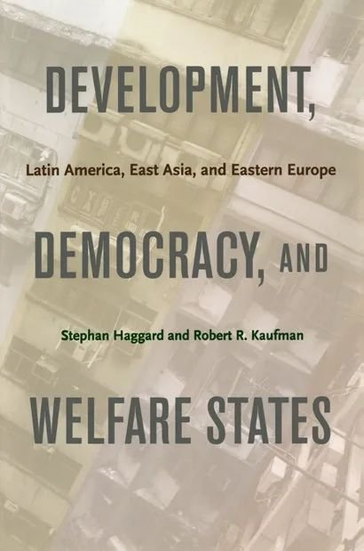
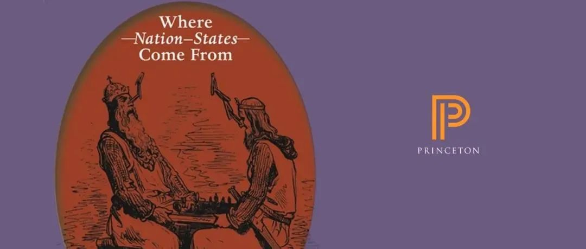

收录于合集
编者荐语：
普林斯顿大学出版社（PUP）中国中心与微信公众号政文观止Poliview联袂挑选该社出版的关于资本主义、民主与发展研究的代表作
以下文章来源于普林斯顿读书汇 ，作者PUP，政文观止
 普林斯顿读书汇 .
普林斯顿读书汇 .
普林斯顿大学出版社 (Princeton University Press) 旗下唯一公众号。自1905年起，PUP已成为全球顶尖学术成果与思想的传播者。关注我们，获取最新英文书摘，领军学者访谈，作者讲座活动。
Editor’s Note
在90年代初， 经济上的资本主义与政治上的西方民主
不仅被认为是追求现代化的标准手段，甚至其自身也成了现代性的标准图景。随着经济危机与政治危机在近30年的此起彼伏，这个人类社会短暂形成的共识迅速就被新兴的政治分歧与文明冲突所消解。
与政客对简练表达的偏好不同，在学术讨论中， 作为一种经济模式的资本主义，作为一种政治模式的西方民主，与内涵、外延十分模糊的发展
，这三者之间的互动引发着持续不断的激辩，衍生出了一个又一个难以回答却引人入胜的问题。面对技术变革，经典意义上的资本主义和西方民主难道不会随之发生改变吗？面向未来的资本主义与西方民主又会在对发展的追求中面临哪些挑战？在政治文化、历史传统与西方国家有明显差别的拉美、东亚等发展中地区，资本主义、民主和发展之间又会呈现出什么样的关系？经济发展与社会制度的一般性理论又有哪些？
本期书单从不同角度呈现了学界对于资本主义、民主与发展的思考 。包含书目如下：
- Democratic Capitalism at the Crossroads: Technological Change and the Future of Politics作者：Carles Boix
- The Politics of Market Reform in Fragile Democracies: Argentina, Brazil, Peru, and Venezuela作者：Kurt Weyland
- Development, Democracy, and Welfare States: Latin America, East Asia, and Eastern Europe 作者：Stephan Haggard and Robert R. Kaufman
- Dependent Development: *The Alliance of Multinational, State, and Local Capital in Brazil 作者：Peter B. Evans
- The Handbook of Economic Development and Institutions作者：Edited by Jean-Marie Baland, François Bourguignon, Jean-Philippe Platteau, and Thierry Verdier
透过对资本主义、民主与发展这三者关系的反复讨论，或许有助于读者更加理解这个处在发展十字路口的世界。
****资本主义、民主与发展书单
书名： Democratic Capitalism at the Crossroads: Technological Change and the Future of Politics
作者： Carles Boix ISBN ：9780691216898 出版日期： 2021.5.4
简介： 二十世纪，民主资本主义在西方工业化国家获得胜利，自由市场和代议制选举都得到了广泛的民意支持。今天，这种政治共识似乎正在瓦解，被两极分化和收入不平等、对民主制度的普遍不满以及民粹主义所破坏。本书作者、普林斯顿大学政治与公共事务教授Carles Boix 追溯过去两个世纪民主资本主义的历史，解释了我们是如何走到这一步的，以及我们未来可能走向何方。
在这个充满不确定性的时代， Democratic Capitalism at the Crossroads 是一本必不可少的读物，它提出了明智的政策解决方案，以维护民主并应对未来的挑战。
** ** 点击下图直达本书购买页****
书名： The Politics of Market Reform in Fragile Democracies: Argentina, Brazil, Peru, and Venezuela 作者： Kurt Weyland ISBN ：9780691117874 出版日期： 2004.4.25 获奖信息：本书入选 2003年 Choice 杰出学术著作
简介： 本书对比较政治学和经济学的一个核心问题采取了强有力的新研究方法：为什么一些脆弱的民主国家，领导人进行激烈而痛苦的经济改革时取得了政治上的成功，最终获得了连任，而其他国家的领导人却最终走向了政治生涯的毁灭？本书作者研究的四个拉丁美洲国家的总统大胆地推行改革，并由此获得了意外的民众支持。他认为，只有利用展望理论（prospect theory）中强大的认知心理学洞察力，才能完全解释阿根廷、巴西、秘鲁和委内瑞拉在20世纪80及90年代政治和经济政策的曲折性。
** ** 点击下图直达本书购买页****
 书名： Development, Democracy, and Welfare States: Latin America, East Asia, and Eastern Europe 作者： Stephan Haggard and Robert R. Kaufman ISBN ：9780691135960 出版日期： 2008.9.14 获奖信息：本书入选 2009年 Choice 杰出学术著作
简介：本书是第一本比较拉丁美洲、东亚和东欧的独特福利国家的学术著作，强调了将民主化和全球化的当代影响置于更广泛历史背景中的重要性。书中比较了拉丁美洲、东亚和东欧地区国家在民主化和经济走向开放之后的不同福利道路。作者展现了拉丁美洲的专有福利制度（exclusionary welfare systems）和经济危机如何激励决策者采取自由的社会政策改革，而共产主义时代的社会权益则限制了东欧新民主国家自由改革的范围。在东亚地区，经济的高增长和宽松的财政条件则为扩大新民主国家的社会权利提供了机会。
** ** 点击下图直达本书购买页****
书名： Dependent Development: The Alliance of Multinational, State, and Local Capital in Brazil 作者： Peter B. Evans ISBN ：9780691021850 出版日期： 1979.4.21简介：为了分析巴西在70年代表现出的对资本积累的持续依附性，美国社会学家Peter B. Evans 着重研究了此前十年间在巴西发展起来的跨国公司、当地私营企业和国有企业之间的关系。他认为，虽然这三种资本之间的关系仍然是矛盾的，但已经形成了一个三重联盟，为地方工业化模式提供了社会结构基础。作者首先回顾了第三世界的帝国主义和依附性的理论，将巴西此前20年的经验置于其历史背景中，追溯了巴西从世纪之交的“典型依附”时期到当时的“依附性发展”阶段的演变。本书在最后探讨了巴西模式对其他第三世界国家的影响。
** ** 点击下图直达本书购买页****
书名： The Handbook of Economic Development and Institutions 作者： Edited by Jean-Marie Baland, François Bourguignon, Jean-Philippe Platteau, and Thierry Verdier ISBN ：9780691191218 出版时间： 2020.1.21
简介：长期以来，包括经济学在内的整个社会科学领域都认识到了制度在理解经济发展中的重要作用。本书首次将国际上最知名的经济学家在这一领域最前沿的工作汇集在一起，其编辑均为经济学顶尖学者，他们提供了关于制度变化及其与经济发展动态相互作用的最新分析。
本书关注三个关键问题：为了论证制度与发展的因果关系而对制度进行定义，正式和非正式制度之间复杂的相互作用，以及制度的演变及其与政治经济发展的相互作用。研究的主题包括制度和增长之间的关系、教育系统、媒体的作用以及传统的庇护制度和政治机构之间的交叉关系。本书每一章都涵盖了该领域的前沿研究，并指出了新的研究领域与研究方向。
**书目内容仅代表作者个人观点，不代表本公众号立场
- END -
相关热读文章

[
失落的帝国、城邦和部落：现代民族国家的源起与兴衰](http://mp.weixin.qq.com/s?__biz=MzU3NzI4MTAxNA==&mid=2247494759&idx=1&sn=07f4c17cd12feef1230d27a450c5fee3&chksm=fd05a2feca722be8a3c0a0ba96a71e6a04873129cb6f4e3e2e19e7fe2d8d6272e18afa0af44d&scene=21#wechat_redirect)